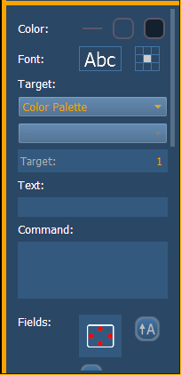
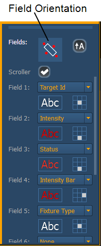
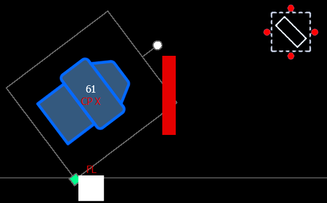
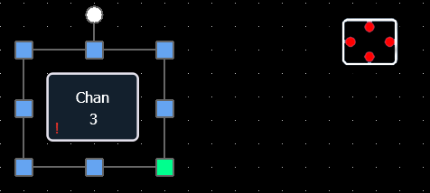
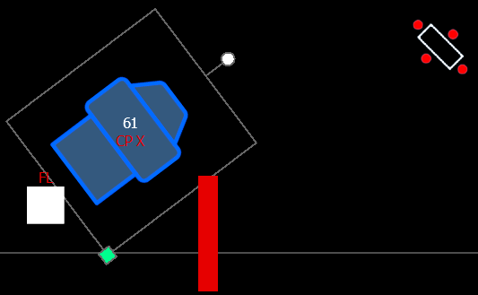
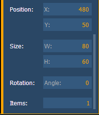

MS Object Properties

You can customize MS objects and fixture symbols in numerous ways found in the MS Object Properties area. With an object selected, you can modify its options.
The customizable options include:
- Address
- Beam Palette
- Channel
- Channel (by Address)
- Color Palette
- Cue
- Cue - Active
- Cue - Pending
- Effect
- Fader
- Focus Palette
- Group
- Intensity Palette
- Macro
- Magic Sheet
- Pixel Map
- Preset
- Scene
- Snapshot
- Submaster
- User
- Console Button
- Command
- Zoom - when clicked, the view will zoom in to show all object within that object’s group.
- Selection - when clicked, all other objects within that object’s group will be selected.
- Text - changes the text for a text object.
- Command - assigns a command to be executed. The target type needs to command.
- Fields - up to six different fields of custom information can be displayed per objects. The justification of each field around the object can be adjusted. The text and color used for each field can also be adjusted. A scroller indicator bar can be added. Fields can display the following data:

- Target ID
- Fixture Type
- Target Name
- Label
- Text 1 through 10
- Text Gel
- Intensity
- Intensity Bar
- Color Swatch
- Summary
- Focus
- Color
- Beam
- Status
- Prev Move
- Next Move
- Channel
- Address
- Port/ Offset
- DMX
- DMX Bar
If multiple fields have the same justification, they will be stacked in field order.
The orientation of fields around the object can be adjusted by pressing the field orientation icon. You can also choose to keep text upright by pressing the icon to the right of the orientation icon.
There are three options for orientation:
- Exterior Bounds - fields will be exterior to the object and will remain at a position regardless of the rotation of the object.

- Interior - fields will be in the interior of the object. This orientation is useful for desk buttons.

- Exterior Shape - fields will be exterior to the object and will move in relation to the object's rotation.


- Position - shows the position of the object on the magic sheet. Position can be manually entered here.
- Size - shows the size of the object. Size can be manually entered here.
- Rotation - shows the rotation of the object. Rotation can be manually entered here.
- Items - refers to the number of objects selected for editing. Multiple objects can be edited at the same time.